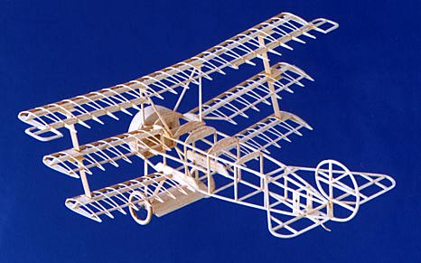
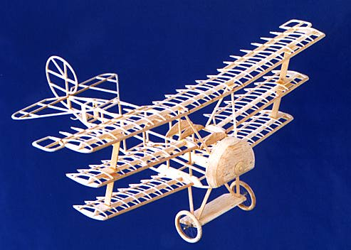

Lee's Hobbies Fokker Dr.I |
|---|
|
This "peanut scale" Fokker Triplane started life as a kit from Lee's Hobbies, and was then modified extensively to include a K&P adjustable thrust bearing, scale spaced sliced ribs and wing trailing edges from thread. |
|  |
|
Weight of the structure, is 9 grams. This includes just over 1 gram for the nose bearing and a bunch of solid balsa in the cowl and landing gear wing. |

|
| The model is finished as a Jasta 9 machine, it has been a bit troublesome in the air. Initially I was scared to really give it the power it seemed to need. |

|
| More recently, I have added some ballast to get the CG well forward, and upped the rubber size as well. It is now flying in a stable right circle, for a bit over 30 seconds. |

|
|
|
|
Copyright 1998-2015, Thayer Syme. All rights reserved |